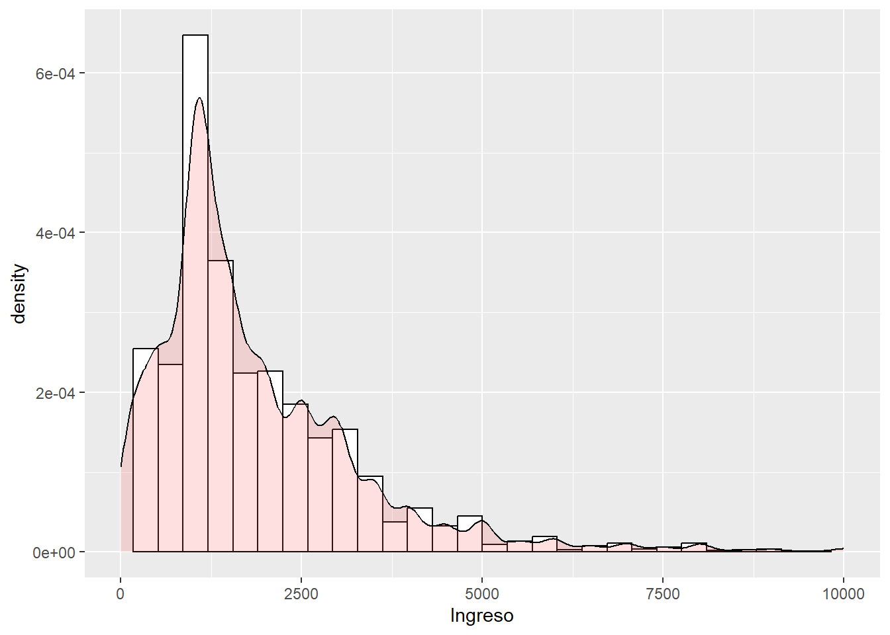
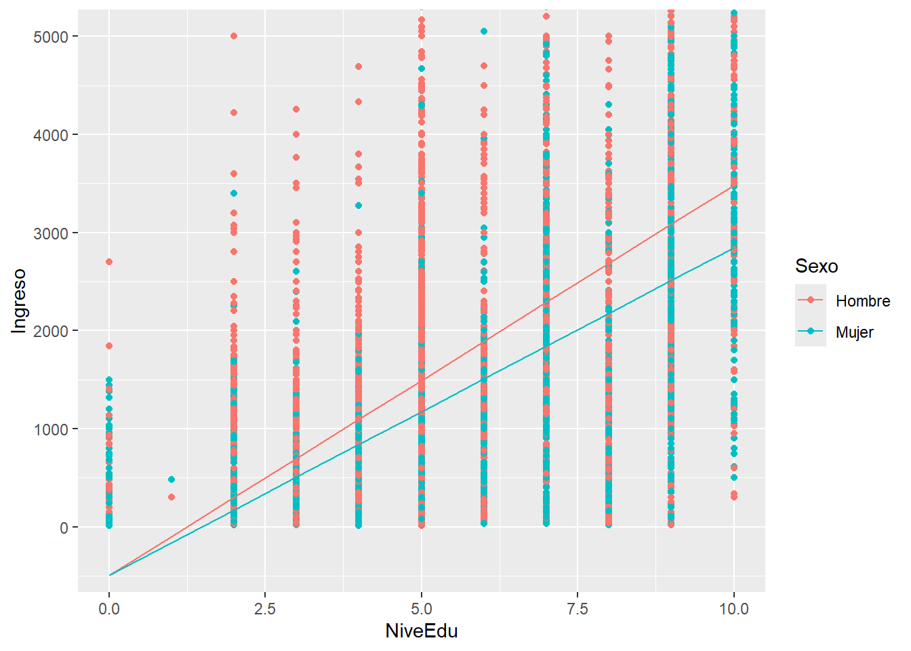

FACULTAD DE CIENCIAS SOCIALES - PUCP
Curso: SOC294 - Estadística para el análisis sociológico 2
Semestre 2025 - 1
¿Para qué sirve hacer una regresión?
Para identificar la relación entre variables de interés a través de un modelo (ecuación de la recta).
La ecuación nos sirve para la predicción.
El comportamiento de una variable está influencia normalmente por más de un factor, podemos obtener una mejor predicción añadiendo más variables.
¿La relación entre las variables suele ser exacta?
NO. La distancia de cada punto (valor observado) a la recta es la parte que el modelo no puede predecir. Lo que buscamos es encontrar un modelo (ecuación de la recta) en el cual los errores sean los mínimos posibles (Estimación de Mínimos Cuadrados - EMC)
Objetivo: Conocer el valor de una variable a partir de más de una variable explicativa.
Y′=β0+β1∗x1+β2∗x2+βi∗xi
En esta expresión, cada uno de los coeficientes representa la influencia individual que cada una de las X tiene sobre Y.
Es importante entender la lógica del control estadístico. En una regresión lineal múltiple, el control estadístico nos permite “eliminar” explicaciones alternativas, en tanto se aisla el efecto de otras variables. La idea es:
Evaluar si la relación entre X – Y permanece si se remueve el efecto de otra variable, es decir, si se controla por una tercera variable.
Se analiza la relación entre X – Y para valores similares o iguales de una variable Z. De esta manera se elimina la influencia de Z en la relación entre X – Y. Es un paso en el establecimiento de X -> Y.
Si la relación entre X - Y desaparece cuando se controla por Z, se dice que la relación era espúrea.
Para este ejercicio utilizaremos la base de datos de indicadores sociodemográficos del mundo por quinquenios. La fuente original de los datos es el proyecto Gapminder.
Consideraremos las siguientes variables
Variable dependiente: Tasa global de fecundidad (tfr) Variables independientes: Años de escolaridad de la mujer (yearSchF) Tasa de uso de anticonceptivos (contracep)
Primero calcularemos dos modelos de regresión simple, que luego compararemos con un modelo de regresión múltiple. Trabajaremos primero con datos del quinquenio 1995-1999.
load(url("https://www.dropbox.com/s/fyobx9uswy3qgp3/dataWorld_q.rda?dl=1"))mod.reg1 <- lm(tfr ~ yearSchF,
data = dataWorld_q[dataWorld_q$quinq == "1995-1999", ])
summary(mod.reg1)##
## Call:
## lm(formula = tfr ~ yearSchF, data = dataWorld_q[dataWorld_q$quinq ==
## "1995-1999", ])
##
## Residuals:
## Min 1Q Median 3Q Max
## -2.49027 -0.56797 -0.03326 0.56028 2.96957
##
## Coefficients:
## Estimate Std. Error t value Pr(>|t|)
## (Intercept) 6.80769 0.16843 40.42 <2e-16 ***
## yearSchF -0.43497 0.02037 -21.35 <2e-16 ***
## ---
## Signif. codes: 0 '***' 0.001 '**' 0.01 '*' 0.05 '.' 0.1 ' ' 1
##
## Residual standard error: 0.9627 on 171 degrees of freedom
## (21 observations deleted due to missingness)
## Multiple R-squared: 0.7272, Adjusted R-squared: 0.7256
## F-statistic: 455.8 on 1 and 171 DF, p-value: < 2.2e-16mod.reg2 <- lm(tfr ~ contracep,
data = dataWorld_q[dataWorld_q$quinq == "1995-1999", ])
summary(mod.reg2)##
## Call:
## lm(formula = tfr ~ contracep, data = dataWorld_q[dataWorld_q$quinq ==
## "1995-1999", ])
##
## Residuals:
## Min 1Q Median 3Q Max
## -2.05066 -0.49731 0.02912 0.61047 2.15326
##
## Coefficients:
## Estimate Std. Error t value Pr(>|t|)
## (Intercept) 6.795721 0.162956 41.70 <2e-16 ***
## contracep -0.067323 0.003072 -21.91 <2e-16 ***
## ---
## Signif. codes: 0 '***' 0.001 '**' 0.01 '*' 0.05 '.' 0.1 ' ' 1
##
## Residual standard error: 0.8302 on 128 degrees of freedom
## (64 observations deleted due to missingness)
## Multiple R-squared: 0.7895, Adjusted R-squared: 0.7879
## F-statistic: 480.2 on 1 and 128 DF, p-value: < 2.2e-16mod.reg3 <- lm(tfr ~ yearSchF + contracep,
data = dataWorld_q[dataWorld_q$quinq == "1995-1999", ])
summary(mod.reg3)##
## Call:
## lm(formula = tfr ~ yearSchF + contracep, data = dataWorld_q[dataWorld_q$quinq ==
## "1995-1999", ])
##
## Residuals:
## Min 1Q Median 3Q Max
## -1.71926 -0.58924 -0.00554 0.52794 2.47162
##
## Coefficients:
## Estimate Std. Error t value Pr(>|t|)
## (Intercept) 7.102160 0.153349 46.314 < 2e-16 ***
## yearSchF -0.176278 0.029194 -6.038 1.76e-08 ***
## contracep -0.046436 0.004366 -10.637 < 2e-16 ***
## ---
## Signif. codes: 0 '***' 0.001 '**' 0.01 '*' 0.05 '.' 0.1 ' ' 1
##
## Residual standard error: 0.7355 on 121 degrees of freedom
## (70 observations deleted due to missingness)
## Multiple R-squared: 0.8405, Adjusted R-squared: 0.8379
## F-statistic: 318.9 on 2 and 121 DF, p-value: < 2.2e-16library(stargazer)##
## Please cite as:## Hlavac, Marek (2022). stargazer: Well-Formatted Regression and Summary Statistics Tables.## R package version 5.2.3. https://CRAN.R-project.org/package=stargazerstargazer(mod.reg1, mod.reg2, mod.reg3, type = "text",
omit.stat=c("ser","f"),
title = "OLS para Tasa Global de Fecundidad 1995-1999",
covariate.labels = c("Años de escolaridad mujeres",
"% Uso de anticonceptivos"),
dep.var.caption = "Variable dependiente:",
dep.var.labels = "Fecundidad",
star.cutoffs = c(0.05, 0.01, 0.001))##
## OLS para Tasa Global de Fecundidad 1995-1999
## ===========================================================
## Variable dependiente:
## -------------------------------
## Fecundidad
## (1) (2) (3)
## -----------------------------------------------------------
## Años de escolaridad mujeres -0.435*** -0.176***
## (0.020) (0.029)
##
## % Uso de anticonceptivos -0.067*** -0.046***
## (0.003) (0.004)
##
## Constant 6.808*** 6.796*** 7.102***
## (0.168) (0.163) (0.153)
##
## -----------------------------------------------------------
## Observations 173 130 124
## R2 0.727 0.790 0.841
## Adjusted R2 0.726 0.788 0.838
## ===========================================================
## Note: *p<0.05; **p<0.01; ***p<0.001Corrige el R2 penalizando por el número de predictores.
Se usa cuando tienes más de una variable independiente para evitar un sobreajuste.
Si agregas variables irrelevantes, R2 ajustado puede disminuir. Si las variables nuevas realmente ayudan, R2 ajustado aumenta.
new.data1 <- data.frame(yearSchF = c(11), contracep = 50)
predict(mod.reg3, newdata = new.data1)## 1
## 2.841304new.data2 <- data.frame(yearSchF = c(11,12,21), contracep = 50)
predict(mod.reg3, newdata = new.data2)## 1 2 3
## 2.841304 2.665027 1.078528new.data3 <- data.frame(yearSchF = c(11), contracep = c(50, 60, 70))
predict(mod.reg3, newdata = new.data3)## 1 2 3
## 2.841304 2.376944 1.912584Se incluye el ingreso per cápita, transformado en escala logarítmica de base 10:
mod.reg4 <- lm(tfr ~ yearSchF + contracep + log10(incomePp),
data = dataWorld_q[dataWorld_q$quinq == "1995-1999", ])
summary(mod.reg4)##
## Call:
## lm(formula = tfr ~ yearSchF + contracep + log10(incomePp), data = dataWorld_q[dataWorld_q$quinq ==
## "1995-1999", ])
##
## Residuals:
## Min 1Q Median 3Q Max
## -1.96829 -0.55149 0.00337 0.54480 2.20363
##
## Coefficients:
## Estimate Std. Error t value Pr(>|t|)
## (Intercept) 8.577224 0.530364 16.172 < 2e-16 ***
## yearSchF -0.139705 0.031024 -4.503 1.56e-05 ***
## contracep -0.042635 0.004436 -9.610 < 2e-16 ***
## log10(incomePp) -0.509500 0.175828 -2.898 0.00447 **
## ---
## Signif. codes: 0 '***' 0.001 '**' 0.01 '*' 0.05 '.' 0.1 ' ' 1
##
## Residual standard error: 0.714 on 120 degrees of freedom
## (70 observations deleted due to missingness)
## Multiple R-squared: 0.851, Adjusted R-squared: 0.8472
## F-statistic: 228.4 on 3 and 120 DF, p-value: < 2.2e-16Los coeficientes estandarizados (también llamados coeficientes beta o beta estandarizados) son una versión de los coeficientes de regresión en la que todas las variables han sido transformadas a la misma escala, generalmente con media 0 y desviación estándar 1. Se pueden comparar directamente entre sí, ya que están en la misma escala.
library(psych)
data95 <- subset(dataWorld_q, dataWorld_q$quinq == "1995-1999")
describe(data95[, c(3,4,5)], fast=T)## vars n mean sd median min max range skew kurtosis se
## tfr 1 184 3.54 1.82 3.04 1.20 7.71 6.51 0.53 -0.92 0.13
## yearSchF 2 174 7.45 3.59 7.95 0.44 13.80 13.36 -0.27 -1.17 0.27
## contracep 3 131 47.47 23.70 52.60 3.30 87.08 83.78 -0.28 -1.17 2.07library(lm.beta)## Warning: package 'lm.beta' was built under R version 4.4.2lm.beta(mod.reg3)##
## Call:
## lm(formula = tfr ~ yearSchF + contracep, data = dataWorld_q[dataWorld_q$quinq ==
## "1995-1999", ])
##
## Standardized Coefficients::
## (Intercept) yearSchF contracep
## NA -0.3502702 -0.6170146En un modelo de regresión múltiple de mínimos cuadrados ordinarios (OLS), la variable dependiente es una variable numérica o cuantitativa. Sin embargo, las variables independientes pueden ser tanto numéricas como categóricas.
Las variables categóricas pueden ser:
Dicotómicas: Solo tienen dos categorías (Sexo del entrevistado; ocurre o no un evento; una condición es verdadera o falsa; etc.) Politómicas: Tienen tres o más categorías (región Costa, Sierra, Selva, por ejemplo) Cuando se incluye una variable categórica en un modelo de regresión, se la representa a través de una o más “dummy variables”, dependiendo del número de categorías que tenga.
Ingreso mensual de trabajadores dependientes
Para explorar este tema, vamos a utilizar la información del Módulo 5 de la ENAHO 2017 sobre empleo e ingresos de los miembros del hogar. Específicamente utilizaremos los datos correspondientes a la ocupación principal de los trabajadores dependientes.
En este ejemplo, tomaremos como variable depediente (Y) el ingreso mensual bruto del trabajador dependiente en su ocupación principal. Nuestra primera variable independiente será el nivel educativo del trabajador.
Diccionario
NiveEdu “¿Cuál es el último año o grado de estudios y nivel que aprobó? - Nivel
0. Sin Nivel
1. Inicial
2. Primaria Incompleta
3. Primaria Completa
4. Secundaria Incompleta
5. Secundaria Completa
6. Superior No Universitaria Incompleta
7. Superior No Universitaria Completa
8. Superior Universitaria Incompleta
9. Superior Universitaria Completa
10. Maestria/Doctorado”
Ocup “Ud. se desempeño en su ocupación principal o negocio como:
1. Empleador o patrono
2. Trabajador Independiente
3. Empleado
4. Obrero
5. Trabajador Familiar No Remunerado
6. Trabajador del Hogar
7. Otro”
Dominio
Costa
Sierra
Selva
Lima M
Ingreso
Sexo
Hombre
Mujer
#library(dplyr)
#data <- Enaho01a_2023_500 %>% select(1:9, 39, 1021, 1024, 101, 102, 1393)
#colnames(data)[c(10, 11, 12, 13, 14, 15)] <- c("Ocup", "Sexo", "NiveEdu", "FreqPag", "Ingreso", "HorasTrabj")
#data <- filter(data, Ocup %in% c(3, 4, 6))
#data <- filter(data, NiveEdu %in% c(1:11))
#data <- filter(data, data$FreqPag == 4)
#data <- data %>%
# mutate(DOMINIO = case_when(
# DOMINIO %in% c(1, 2, 3) ~ "Costa",
# DOMINIO %in% c(4, 5, 6) ~ "Sierra",
# DOMINIO == 7 ~ "Selva",
# DOMINIO == 8 ~ "Lima M"
#))
#data <- data %>%
#mutate(Sexo = case_when(
# Sexo == 1 ~ "Hombre",
# Sexo == 2 ~ "Mujer"
#))
#data$NiveEdu <- ifelse(data$NiveEdu >= 1 & data$NiveEdu <= 11, data$NiveEdu - 1, data$NiveEdu)
#data <- na.omit(data)
#write.csv(data, "Empleo.csv", row.names = FALSE)
library(rio)
data=import("Empleo.csv")library(ggplot2)##
## Attaching package: 'ggplot2'## The following objects are masked from 'package:psych':
##
## %+%, alphap <- ggplot(data, aes(x = Ingreso)) +
geom_histogram(aes(y = ..density..), colour = "black", fill = "white") +
geom_density(alpha = .2, fill = "#FF6666") +
scale_x_continuous(limits = c(0, 10000))
p## Warning: The dot-dot notation (`..density..`) was deprecated in ggplot2 3.4.0.
## ℹ Please use `after_stat(density)` instead.
## This warning is displayed once every 8 hours.
## Call `lifecycle::last_lifecycle_warnings()` to see where this warning was
## generated.## `stat_bin()` using `bins = 30`. Pick better value with `binwidth`.## Warning: Removed 49 rows containing non-finite outside the scale range
## (`stat_bin()`).## Warning: Removed 49 rows containing non-finite outside the scale range
## (`stat_density()`).## Warning: Removed 2 rows containing missing values or values outside the scale range
## (`geom_bar()`).
Ingreso = b0 + b1*NiveEdu
mod1.0 <- lm(Ingreso ~ NiveEdu, data = data)
stargazer(mod1.0, type = "text",
omit.stat=c("ser","f"),
model.numbers = FALSE, object.names = TRUE,
star.cutoffs = c(0.05, 0.01, 0.001))##
## ==========================================
## Dependent variable:
## -----------------------------
## Ingreso
## mod1.0
## ------------------------------------------
## NiveEdu 359.539***
## (4.971)
##
## Constant -442.619***
## (34.064)
##
## ------------------------------------------
## Observations 16,034
## R2 0.246
## Adjusted R2 0.246
## ==========================================
## Note: *p<0.05; **p<0.01; ***p<0.001En el diagrama anterior se observa que los puntos rojos, que represetan a los hombres, son más frecuentes encima de la recta de regresión que por debajo de ella, lo que indicaría que los hombres tienden a tener ingresos mayores a los de las mujeres.
Vamos a introducir en el modelo al sexo como una variable categórica - dicotómica con efecto independiente aditivo:
Ingreso = b0 + b1NiveEdu + b2Sexo
En este caso, la variable sexo será procesada de la siguiente manera: sexo=0: Hombres; sexo=1: Mujeres.
En tal sentido si el trabajador es un hombre (sexo=0), el modelo de regresión sería:
Ingreso = b0 + b1NiveEdu + b2*1
Por otro lado si el trabajador es una mujer (sexo=1sexo=1), entonces el modelo de regresión sería:
Ingreso = b0 + b1NiveEdu + b2*1
Como se aprecia, en este caso, la variable sexo afecta la intersección del modelo.
mod1.1 <- lm(Ingreso ~ NiveEdu + Sexo, data = data)
stargazer(mod1.0, mod1.1, type = "text",
omit.stat=c("ser","f"),
model.numbers = FALSE, object.names = TRUE,
star.cutoffs = c(0.05, 0.01, 0.001))##
## ===========================================
## Dependent variable:
## ------------------------------
## Ingreso
## mod1.0 mod1.1
## -------------------------------------------
## NiveEdu 359.539*** 368.380***
## (4.971) (4.929)
##
## SexoMujer -441.393***
## (21.936)
##
## Constant -442.619*** -299.324***
## (34.064) (34.388)
##
## -------------------------------------------
## Observations 16,034 16,034
## R2 0.246 0.265
## Adjusted R2 0.246 0.265
## ===========================================
## Note: *p<0.05; **p<0.01; ***p<0.001mod1.2 <- lm(Ingreso ~ NiveEdu + HorasTrabj, data = data)
stargazer(mod1.0, mod1.1, mod1.2, type = "text",
omit.stat=c("ser","f"),
model.numbers = FALSE, object.names = TRUE,
star.cutoffs = c(0.05, 0.01, 0.001))##
## ================================================
## Dependent variable:
## -----------------------------------
## Ingreso
## mod1.0 mod1.1 mod1.2
## ------------------------------------------------
## NiveEdu 359.539*** 368.380*** 364.947***
## (4.971) (4.929) (4.954)
##
## SexoMujer -441.393***
## (21.936)
##
## HorasTrabj 8.790***
## (0.616)
##
## Constant -442.619*** -299.324*** -841.252***
## (34.064) (34.388) (43.876)
##
## ------------------------------------------------
## Observations 16,034 16,034 16,034
## R2 0.246 0.265 0.256
## Adjusted R2 0.246 0.265 0.255
## ================================================
## Note: *p<0.05; **p<0.01; ***p<0.001mod1.3 <- lm(Ingreso ~ NiveEdu + DOMINIO, data = data)
stargazer(mod1.0, mod1.1, mod1.2, mod1.3, type = "text",
omit.stat=c("ser","f"),
model.numbers = FALSE, object.names = TRUE,
star.cutoffs = c(0.05, 0.01, 0.001))##
## =============================================================
## Dependent variable:
## -----------------------------------------------
## Ingreso
## mod1.0 mod1.1 mod1.2 mod1.3
## -------------------------------------------------------------
## NiveEdu 359.539*** 368.380*** 364.947*** 353.712***
## (4.971) (4.929) (4.954) (4.983)
##
## SexoMujer -441.393***
## (21.936)
##
## HorasTrabj 8.790***
## (0.616)
##
## DOMINIOLima M 314.108***
## (31.640)
##
## DOMINIOSelva 17.444
## (31.948)
##
## DOMINIOSierra -65.296*
## (27.742)
##
## Constant -442.619*** -299.324*** -841.252*** -447.963***
## (34.064) (34.388) (43.876) (37.798)
##
## -------------------------------------------------------------
## Observations 16,034 16,034 16,034 16,034
## R2 0.246 0.265 0.256 0.253
## Adjusted R2 0.246 0.265 0.255 0.253
## =============================================================
## Note: *p<0.05; **p<0.01; ***p<0.001mod1.4 <- lm(Ingreso ~ NiveEdu + DOMINIO + Sexo, data = data)
stargazer(mod1.0, mod1.1, mod1.2, mod1.3, mod1.4, type = "text",
omit.stat=c("ser","f"),
model.numbers = FALSE, object.names = TRUE,
star.cutoffs = c(0.05, 0.01, 0.001))##
## =========================================================================
## Dependent variable:
## -----------------------------------------------------------
## Ingreso
## mod1.0 mod1.1 mod1.2 mod1.3 mod1.4
## -------------------------------------------------------------------------
## NiveEdu 359.539*** 368.380*** 364.947*** 353.712*** 362.540***
## (4.971) (4.929) (4.954) (4.983) (4.940)
##
## SexoMujer -441.393*** -442.979***
## (21.936) (21.834)
##
## HorasTrabj 8.790***
## (0.616)
##
## DOMINIOLima M 314.108*** 314.331***
## (31.640) (31.242)
##
## DOMINIOSelva 17.444 18.196
## (31.948) (31.546)
##
## DOMINIOSierra -65.296* -70.330*
## (27.742) (27.395)
##
## Constant -442.619*** -299.324*** -841.252*** -447.963*** -302.554***
## (34.064) (34.388) (43.876) (37.798) (38.005)
##
## -------------------------------------------------------------------------
## Observations 16,034 16,034 16,034 16,034 16,034
## R2 0.246 0.265 0.256 0.253 0.272
## Adjusted R2 0.246 0.265 0.255 0.253 0.271
## =========================================================================
## Note: *p<0.05; **p<0.01; ***p<0.001Supongamos que en vez de proponer que la variable sexo tiene un efecto aditivo en el ingreso, independiente respecto del nivel educativo, trabajemos con la hipótesis de que existe una interacción entre la variable sexo y el nivel educativo.
En este segundo caso, la hipótesis plantea que el efecto de la educación en el ingreso será diferente según el sexo del trabajador, por lo tanto el coeficiente de la variable categórica afectaría la pendiente en vez de la constante de la ecuación.
Ecuaciones para efectos independientes e interactivos En el caso de un efecto independiente, la ecuación que ya hemos visto es:
Ingreso=b0+b1NiveEdu+b2Sexo
Hombres (sexo=0): Ingreso=b0+b1NiveEdu
Mujeres (sexo=1): Ingreso=(b0+b2)+b1NiveEdu
En el caso de un efecto interactivo, la ecuación sería:
Ingreso=b0+b1nivedu+b2sexo∗NiveEdu
Hombres (sexo=0): Ingreso=b0+b1NiveEdu
Mujeres (sexo=1): Ingreso=b0+(b1+b2)NiveEdu
mod1.5 <- lm(Ingreso ~ NiveEdu : Sexo, data = data)
stargazer(mod1.0, mod1.1, mod1.5, type = "text",
omit.stat=c("ser","f"),
model.numbers = FALSE, object.names = TRUE,
star.cutoffs = c(0.05, 0.01, 0.001))##
## ======================================================
## Dependent variable:
## -----------------------------------
## Ingreso
## mod1.0 mod1.1 mod1.5
## ------------------------------------------------------
## NiveEdu 359.539*** 368.380***
## (4.971) (4.929)
##
## SexoMujer -441.393***
## (21.936)
##
## NiveEdu:SexoHombre 397.975***
## (5.272)
##
## NiveEdu:SexoMujer 334.188***
## (5.071)
##
## Constant -442.619*** -299.324*** -497.577***
## (34.064) (34.388) (33.759)
##
## ------------------------------------------------------
## Observations 16,034 16,034 16,034
## R2 0.246 0.265 0.264
## Adjusted R2 0.246 0.265 0.264
## ======================================================
## Note: *p<0.05; **p<0.01; ***p<0.001fit1.5 <- predict(mod1.5)
dataf5 <- cbind(data, fit1.5)
ggplot(dataf5, aes(x = NiveEdu, y = Ingreso, color = Sexo)) +
geom_point() +
geom_line(aes(y = fit1.5)) +
coord_cartesian(ylim = c(-400, 5000))
Podemos estimar otro modelo de regresión que contenga ambos supuestos.
Supuesto de efecto independiente: independientemente del nivel educativo, los hombres y las mujeres parten de distintas bases de ingreso, menores en el caso de las mujeres. Aquí tendremos dos intersecciones.
Supuesto de efecto interactivo: el efecto de la educación en los ingresos no es el mismo en el caso de los hombres y las mujeres. Las pendientes de hombres y mujeres serán distintas.
Ingreso=b0+b1NiveEdy+b2Sexo+b3Sexo∗Nivedu
mod1.6 <- lm(Ingreso ~ NiveEdu * Sexo, data = data)
stargazer(mod1.0, mod1.1, mod1.5, mod1.6, type = "text",
omit.stat=c("ser","f"),
model.numbers = FALSE, object.names = TRUE,
star.cutoffs = c(0.05, 0.01, 0.001))##
## ==================================================================
## Dependent variable:
## -----------------------------------------------
## Ingreso
## mod1.0 mod1.1 mod1.5 mod1.6
## ------------------------------------------------------------------
## NiveEdu 359.539*** 368.380*** 382.354***
## (4.971) (4.929) (6.782)
##
## SexoMujer -441.393*** -248.597***
## (21.936) (67.933)
##
## NiveEdu:SexoHombre 397.975***
## (5.272)
##
## NiveEdu:SexoMujer 334.188*** -29.599**
## (5.071) (9.871)
##
## Constant -442.619*** -299.324*** -497.577*** -387.416***
## (34.064) (34.388) (33.759) (45.221)
##
## ------------------------------------------------------------------
## Observations 16,034 16,034 16,034 16,034
## R2 0.246 0.265 0.264 0.265
## Adjusted R2 0.246 0.265 0.264 0.265
## ==================================================================
## Note: *p<0.05; **p<0.01; ***p<0.001fit1.6 <- predict(mod1.6)
dataf6 <- cbind(data, fit1.6)
ggplot(dataf6, aes(x = NiveEdu, y = Ingreso, color = Sexo)) +
geom_point() +
geom_line(aes(y = fit1.6)) +
coord_cartesian(ylim = c(-400, 5000))